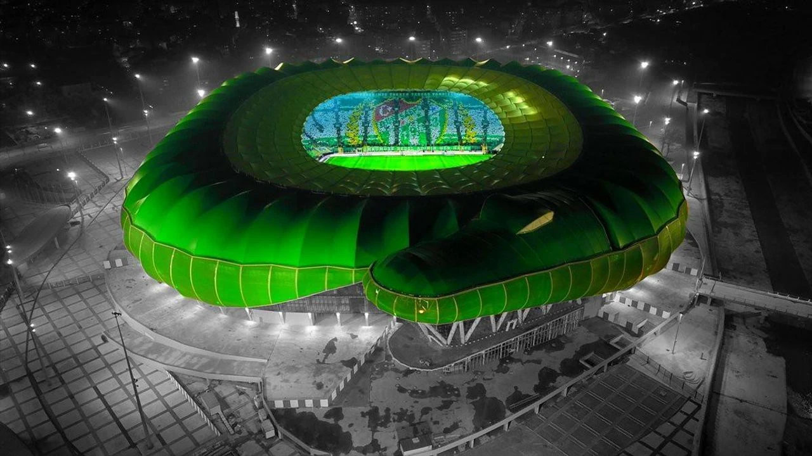

Yeşil-Beyazlıların Efsanesi
Bursaspor, 1963 yılında Bursa'da kurulmuştur. Renkleri yeşil-beyazdır. 2009-2010 sezonunda Süper Lig şampiyonu olarak "Anadolu devrimi"nin simgesi olmuştur.
Bursaspor maçlarını 43.361 kapasiteli modern bir stadyum olan Timsah Arena’da oynamaktadır. Mimarisiyle dikkat çeken bu stadyum, takımın ruhunu yansıtır.
Bursaspor’un taraftar grubu Teksas, Türkiye’nin en tutkulu ve renkli taraftar topluluklarından biridir. Yeşil-beyaz renkler şehirle bütünleşmiştir.